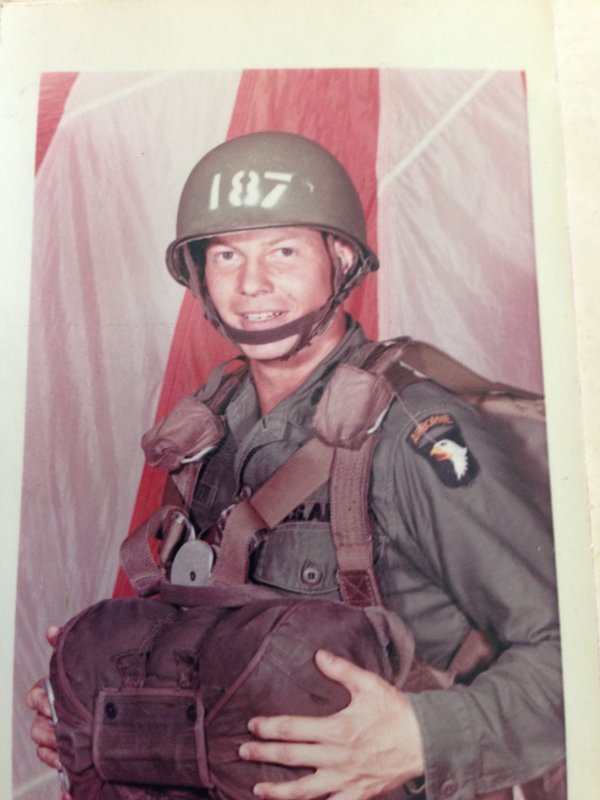
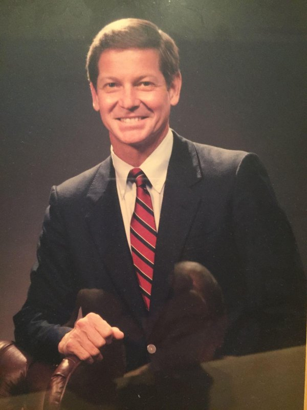

Joseph F. “Joe” Sackett, M.D., 86, of Ponte Vedra Beach, Florida, died peacefully at home on [date]. He lived a full life, bringing character and excellence to his profession, community service, and many avocations.
Joe Sackett was born in Cleveland, Ohio, on January 16, 1940, to George L. Sackett, M.D., and Cora Hurst Sackett. Joe graduated from Dartmouth College in 1962 and married Harriett E. Bebout. He earned his medical degree from Tulane University School of Medicine in 1966 and completed his internship and radiology residency at Mary Hitchcock Memorial Hospital in Hanover, New Hampshire.

Joe volunteered for the Army Medical Corps with the 101st Airborne Division. He served in Vietnam’s I Corps as commander of Bravo Company, 2nd Brigade. His medical company established Landing Zone (LZ) Sally, north of Huế, Vietnam. For a full year his command triaged wounded soldiers and Marines medevaced from battle before they were flown to the hospital in Da Nang.Starting in 1972, Joe took one year of fellowship training in neuroradiology at Ullevål Hospital in Oslo, Norway, and one year at Cornell University Medical Center in New York City. Joe’s academic career started in 1974 at the University of Wisconsin School of Medicine in Madison, Wisconsin. He and his faculty colleagues researched safer contrast media for imaging the spinal canal and brain. Their work culminated in the textbook New Techniques in Myelography (1979).

In 1981, Joe was promoted to professor and named chairman of the Department of Radiology. He oversaw the department’s adoption of magnetic resonance imaging and pioneered the use of information technology to improve the diagnostic process. During his 15 years of leadership, the radiology department grew to become a world-renowned clinical and research institution. Joe was committed to his faculty and residents: he initiated maternity and paternity leave policies where none previously existed. Upon his retirement, the University of Wisconsin–Madison established the Joseph F. Sackett Professorship in Radiology to continue his legacy of training neuroradiologists.Joe spent his retirement pursuing the Sackett family’s love of sailing. His oldest brother, George Sackett Jr., introduced the sport to the family in the late 1930s. Together with his parents and older brothers George, John “Jack,” and Jim, Joe raced aboard the original Sesame and won nearly every Great Lakes race they entered from 1954 to 1963. Jim Sackett was a successful boatbuilder and constructed Joe’s Brewer 44 cruiser, Shelagh, in 1990. Joe and his second wife, Sheilah O’Connor, sailed more than 60,000 miles together. Their journeys took them from the Great Lakes, down the Eastern Seaboard, across the Atlantic, and throughout the Mediterranean. Joe and Sheilah settled in Ponte Vedra Beach. There he served on the race committee for a local yacht club and earned the grade of Senior Navigator in the Jacksonville Sail and Power Squadron.
Joe was a longtime member and leader of dozens of professional associations, alumni boards, and social organizations. An active Rotarian in both Madison and Florida, he led programming and membership recruitment for his clubs. He was an avid duplicate bridge player who directed games throughout the Jacksonville area. Joe looked for and found a lifetime of opportunities to give of himself.
Joe is survived by his wife, Sheilah; his children, Joe Jr. (Jill), Sam (Sara), and Polly (Kevin); and his grandchildren, Joe III, Katie, Zoë, Jonas, Ben, and Petra. Joe's celebration of life will be held from 3 to 6 p.m. on Sunday, May 30, 2027, at Mentor Harbor Yacht Club in Mentor, Ohio. The family warmly invites all who had the good fortune to know Joe.